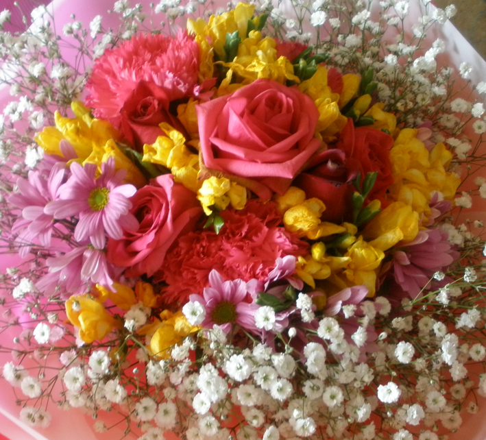

초등학교 1학년 새로운 환경에서 만나는 새로운 친구, 교사, 공부방법 등에서 나타나는 아이들의 신체적, 인지적, 사회・정서적 아이들의 특성은 다음과 같다.
1. 신체적 발달
1) 신체적으로 발가락으로 선 상태에서 한 발로 서서 오래버티기, 다양한 신체 활동을 통해 자신의 신체 능력을 탐색하고 활동을 활발한다. 대부분 앞니가 빠지는 이갈이를 하는 아이들이 활짝 웃으면 귀엽고 너무나 우습다.
2) 소근육과 균형감이 발달하지만 아직은 잘 넘어지고 자기방어를 잘하지 못한다. 선 긋기, 단추 채우기, 젓가락질, 가위질, 달리기, 평균대 오르기 복잡한 신체기능을 나타낼 수 있다.
3) 미세 운동 기술이 점차 발달하여, 연필을 쥐고 글을 쓰거나, 가위를 사용한다. 줄넘기를 할 때 손을 돌려서 줄이 돌아오는 시간을 계산하여 발을 동시에 뛰어오르는 것이 어려워 시행착오를 겪지만 꾸준히 연습하면 손과 발의 협응이 발전한다.

2. 인지적 발달
1) 초등 1학년은 학습에 있어서 중요한 시기이다. 아이들은 읽기, 쓰기, 수학 같은 학문의 기초를 배운다. 남보다 먼저 하고 싶어 한다. 무엇이든 친구들보다 먼저 해서 1등을 하고 싶어 하며, 매우 활동적이며 에너지가 많다.
2) 아이들은 호기심이 많고, 새로운 것을 배우려는 강한 욕구를 보인다. 아이들은 질문을 통해 세상에 대해 배우려고 애쓴다. 그래서 아는 것도 자꾸 물어본다. “읽기책 보고 공책에 써 보세요.” 라는 지시를 하면, “선생님 연필로 써요?, 몇 번 써요?, 어디다 써요?” 등 다양한 질문을 통하여 자신의 욕구와 관심을 받고자 한다.
3) 마음에 드는 책은 여러 번 반복해서 읽고, 이야기를 듣고 상상하기를 좋아한다. 아이들은 수업 시간에도 자기가 흥미를 느끼는 주제가 나오면 개인적인 이야기를 자연스럽게 털어놓는다.
4) 크기에 대한 감각이 부족하기 때문에 시각적인 사물의 크기 비교에 대우 약하다. 아이들에게 자신의 손 크기나 연필 크기를 똑 같이 그려보는 활동을 통해 사물을 자세하게 관찰하는 감각을 길러주면 좋다.
3. 사회적, 정서적 발달
1) 초등학교에 입학하는 것은 아이들이 자신의 정체성을 발달시키기 시작하는 시기이다. 아이들은 자신의 감정을 이해하고 표현하는 법을 배워간다.
2) 새로운 학교 환경에 적응하면서, 다양한 정서적 반응을 보일 수 있다. 이러한 적응 과정을 용이하게 하기 위한 친구들의 상호작용과 나름대로 모방은 사회적 기술과 협동심을 발달시킨다.
3) 주변의 것들을 신기하게 여기고 질문을 많이 한다. 질문에 대한 답변은 전문적인 지식을 설명하기보다 상상력을 이끌어낼 수 있는 답변을 하는 것도 좋다.
초등1학년 아이들은 규칙을 이해하고 따르기 시작하며, 학교와 같은 새로운 환경에서 필요한 구조와 기대를 나타낸다. 이러한 특성을 이해하여 아이가 학교 생활과 사회라는 공동체 생활에서 긍정적인 경험을 할 수 있도록 도와줘야 한다. 즉, 교육적 지원, 사회적 기술 향상, 정서적 지원을 제공하는 것이며, 아이의 발달 단계와 개인적 차이에 알맞는 교육적 접근이 필요하다.
2024.01.02 - [상담] - 교육기관 "가기 싫어" - 원인 및 지도 방법
교육기관 "가기 싫어" - 원인 및 지도 방법
1. 교육기관 "가기 싫어" 하는 원인 아침은 아이를 깨우고, 씻기고, 먹이고, 준비물을 챙겨 교육기관에 보내는 바쁜 시간입니다. 특히 맞벌이 가정에서는 이런 아침 준비가 더욱 분주합니다. 아이
think-sis.co.kr